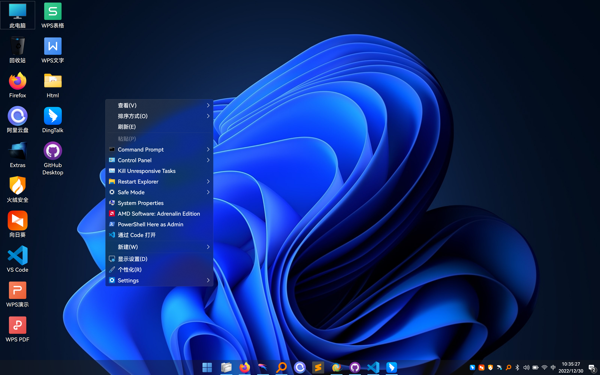
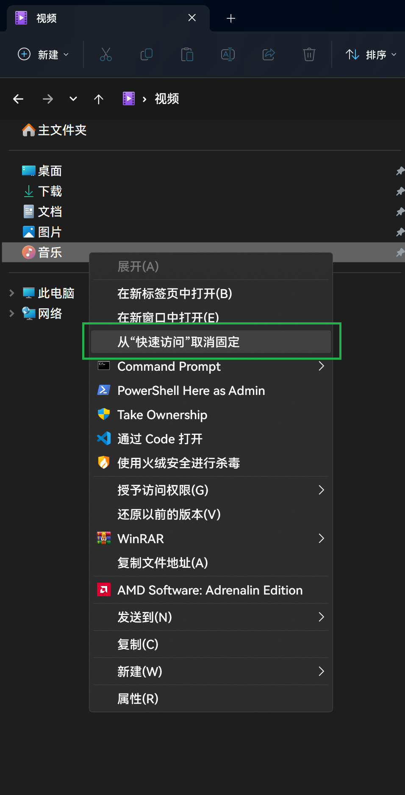

最终显示效果如图：

背景
最近将笔记本装上了Phoenix精简的系统X-lite Win11，其默认显示语言为英文，可以下载安装中文语言包，但是貌似有以下几个问题：
- 会出现方块（乱码）
- 微软拼音无法启动（通过临时启动
ctfmon.exe或将其设为开机启动解决） - 中文字相较原版win11镜像难看（细小不齐等）
走过的弯路
- 使用该精简内置的优化工具
Winaero Tweaker修改为HarmonyOS_Sans_Medium.ttf字体，结果发现只能修改只对英文生效。 - 通过修改注册表，参见：https://blog.csdn.net/amoscn/article/details/106224359
正确姿势
使用noMeiryoUI进行修改，字体使用
HarmonyOS_Sans_SC_Medium.ttf。你就能如愿以偿了。以下是我的配置截图：
去除不想要的右键菜单
使用火绒自带的右键菜单管理工具即可
WPS相关
WPS设置工具栏字体

去除WPS云文档入口
注册表，找到如下位置删除文件。（不是右边的数值）
- 资源管理左导航栏：（中间数字可能有区别，看好开头结尾即可）
HKEY_USERS\S-1-5-21-1514480548-2261916930-102402149-1001\Software\Microsoft\Windows\CurrentVersion\Explorer\Desktop\NameSpace\{7AE6DE87-C956-4B40-9C89-3D166C9841D3} - 资源管理我的电脑：
HKEY_CURRENT_USER\Software\Microsoft\Windows\CurrentVersion\Explorer\MyComputer\NameSpace
隐藏资源管理器左侧不想要的文件夹
弯路：
dism++默认提供7个文件夹的隐藏，但是下载和桌面我经常用到，这就需要自己动手定制了。
https://github.com/Chuyu-Team/Dism-Multi-language/issues/527https://jingyan.baidu.com/article/75ab0bcbb47b09d6864db2cc.html
直接右键该文件夹，选择
从"快速访问"取消固定即可，如图。

另参考文章
Windows 10 资源管理器隐藏网络、3D对象、视频、图片、文档等多余文件夹：https://blog.csdn.net/m0_46463321/article/details/125387284
windows美化相关网站、视频
https://cleodesktop.gumroad.com/
https://cleodesktop.com/obetal-tequila-theme-for-windows-11/
https://zhutix.com/tag/win11-zhuti/
https://www.youtube.com/watch?v=To1AXc9ESwU及https://github.com/niivu/Windows-11-themes
图案列表 No.2


{.gallery data-height=”120”}